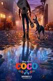

Date of Release : November 22, 2017.0
Cast :
- Anthony Gonzalez as Miguel Rivera
- Gael García Bernal as Hector
- Benjamin Bratt as Ernesto de la Cruz
- Renée Victor as Abuelita
- Ana Ofelia Murguia as Mamá Coco
Description :
Despite his family's generation-old ban on music, Miguel dreams of becoming an accomplished musician like his idol Ernesto de la Cruz. Desperate to prove his talent, Miguel finds himself in the Land of the Dead. Along the way, he meets charming trickster Hector and together they set off on an extraordinary journey to unlock the real story behind Miguel's family history.